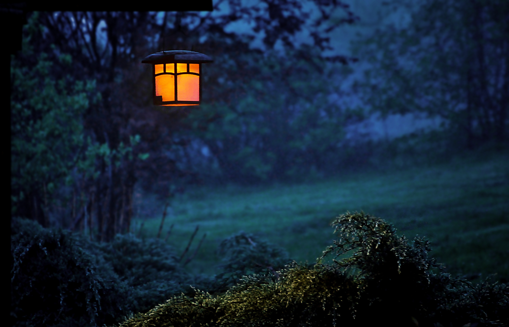
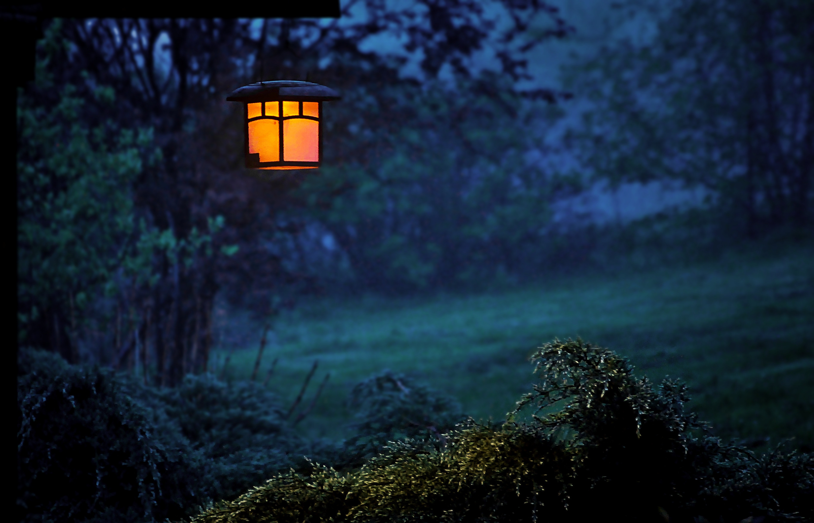

Zoe Thomas
JUNIOR WEB-DEVELOPER
I am highly organized and pay extreme attention to detail. I am a very positive, compassionate and ambiguous person who can learn fast and I work very efficiently.I enjoy being in the company of people creating a pleasant environment but I too am not dependant on having company to perform in excellency.
As a Junior Web Developer I focus on being able to offer a diverse range of creative and technical solutions to a variety of clients.

Academic Details
Tertiary Education
- Institution : CodeSpace
- Course: Front end web development
- Subjects: Programming, professional development, design thinking
Programming languages : HTML and Bootstrap Framework, CSS (SASS and
SCSS), Javascript (Node.js, Express.js, Mongoose,
jQuery, React.js), Mongodb, MySQL
Secondary Education
- School: Belgravia High School
- Year: 2017
- Qualification: Matric certificate
- Additional course: Played squash, tutored in biology and tutored in piano
work-experience
- Name of Company : Topeka Spur
- Position : Hostess
- Duration of service:3 weeks
- Duties/Responsibilities: Dealing with customers on a daily and finding solutions to any complaints. Assisting customers to their preferable seat to keep them happy.
Work Shadowing
I am equipt to code in:
- HTML
- CSS
- JavaScript
- jQuery
- Sass
I am able to make use of:
- API's
- CRUD
- The Command Prompt
Salesians Life Choices Academy: 2018
Fullstack Web Development (6 months full-time course)
The Life Choices Academy is a full-time program which empowers youth from the Cape Flats with life, practical and professional development skills. We did intensive study of the following web development languages: HTML, CSS, SASS, jQuery, JavaScript, Node and MongoDB. As part of our professional development, we had the opportunity to use online resources such as MOOCs, were taught Design Thinking and made use of resources for personal reflection, such as DISC profiles and SMART goal setting. Taking part in this program has been challenging and definitely took me out of my comfort zone.
Although it was a new environment and atmosphere for me, I learnt so much and enjoyed my time doing it.
This course has also changed my way of thinking as a person. I have improved in other areas as well such as self-learning, analysing problems and finding solutions. Life Skills provided by Life Choices has taught me how to be my own motivation, how to stay calm and collected in stressful situations and to see every situation from different perspectives.
I drive to deliver a consistent and exceptional standard of work. I have learnt that there is always room for improvement.
Functional but fun and engaging is what I am working towards.
Ignore trends. Make it timeless
Don't complicate. Keep it simple
Rewards are good, but embrace criticism
Love the user. Love the client.
Inspiration


 
